Readable export of my Spring 2024 assignment. The text and embedded outputs are retained from the original submission. The portfolio overview provides a concise explanation of the methods and skills.
Homework 4: Measurement & Evaluation of HCC Systems (HCC 6400)
Raphael Maris Ugboko
April 5, 2024.
Question 1. Repeated-measures ANOVA with ezANOVA and lme
Input:
div$diversification <- factor(div$diversification, levels = c("low", "medium", "high"))
levels(div$diversification)
Input:
ggplot(div, aes(diversification, perceived_diversity)) + geom_boxplot()
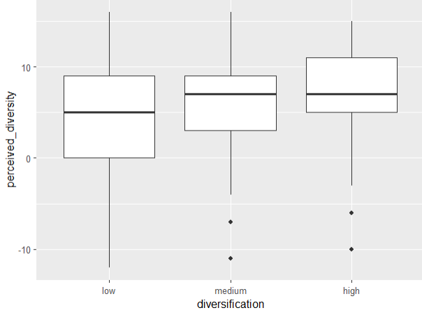
Saved figure or output 1 · original Homework 4 submission. Select the image to inspect it at full size.There is greater variability in low diversification and lesser variability in medium and high diversification. This variability is for each individual condition, so it indicates potential heteroscedasticity and not sphericity. However, I think there could be a significant effect because there are outliers for medium and high, and because there is a degree of overlap between the boxplots.
Input:
leveneTest(div$perceived_diversity, div$diversification, level = mean)
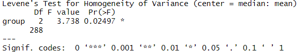
Saved figure or output 2 · original Homework 4 submission. Select the image to inspect it at full size.There is a significant difference in the variances of perceived_diversity across the different levels of diversification (p = .025). This indicates presence of heteroscedasticity. The results are problematic for a repeated measures ANOVA because one of the assumptions of ANOVA is that the variances across groups should be equal (homoscedasticity), and a violation of this assumption can result in incorrect conclusions being drawn from the results.
Input:
by(div$perceived_diversity, div$diversification, stat.desc, basic = F, norm = T)
divLow <- subset(div, diversification == "low", select = c("perceived_diversity"))
divMedium <- subset(div, diversification == "medium", select = c("perceived_diversity"))
divHigh <- subset(div, diversification == "high", select = c("perceived_diversity"))
shapiro.test(divLow$perceived_diversity)
shapiro.test(divMedium$perceived_diversity)
shapiro.test(divHigh$perceived_diversity)
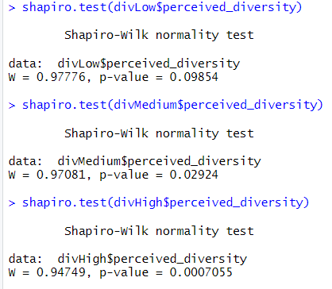
Saved figure or output 3 · original Homework 4 submission. Select the image to inspect it at full size.The results from the Shapiro-Wilk normality tests for each level of diversification show varying levels of normality in the distribution of perceived_diversity.
Low diversification does not significantly deviate from normality, i.e. the data is normal (p = .099); Medium diversification significantly deviates from normality, i.e the data is non-normal (p = .029); High diversification significantly deviates from normality, i.e the data is non-normal (p < .01). One of the key assumptions of repeated measures ANOVA is normally distributed data, hence the results are somewhat problematic, because Medium diversification and High diversification are non-normal.
Input:
hist_div <- ggplot(div, aes(perceived_diversity)) + geom_histogram(binwidth = 1,
aes(y=..density..), color = "black", fill = "white")
hist_div + stat_function(fun=dnorm, args = list(mean=mean(div$perceived_diversity,
na.rm=T), sd=sd(div$perceived_diversity, na.rm = T))) + facet_wrap(~diversification)
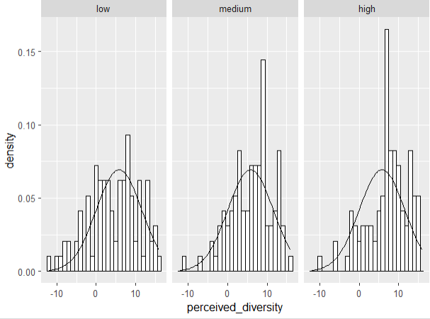
Saved figure or output 4 · original Homework 4 submission. Select the image to inspect it at full size.The histograms reflect non-normality as well. Thus, these results are problematic.
Input:
ezAOV <- ezANOVA(data = div, dv=.(perceived_diversity), wid=.(userId), within=.(diversification),
detailed = T, type = 3)
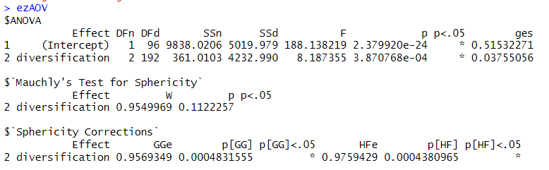
Saved figure or output 5 · original Homework 4 submission. Select the image to inspect it at full size.The total sum of squares is 9838.0206, model sum of squares is 361.0103. The residual sum of squares is 4232.990. There is no presence of sphericity. The effect of diversification on perceived diversity is significant F(2, 192) = 8.187, p = .000387. The size of the effect is η2 = .0376.
Input:
pairwise.t.test(div$perceived_diversity, div$diversification, paired=T, p.adjust.method = "bonferroni")
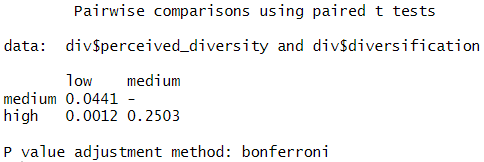
Saved figure or output 6 · original Homework 4 submission. Select the image to inspect it at full size.We find a significant difference between low and medium (p = .0441) and low and high (p = .0012).
Mauchly’s test indicated that the assumption of sphericity has not been violated i.e there is no sphericity (W = .955, p = .112). The results show that the perceived diversity was significantly affected by the diversification, F(2, 192) = 8.187, p = .000387, η2 = .0376.
The perceived diversity was greater for the low diversification than for the medium diversification (p = .0441) or the high diversification (p = .0012). None of the other differences are significant.
WRS2::rmanovab(div$perceived_diversity, div$diversification, div$userId, tr=.2, nboot=2000)
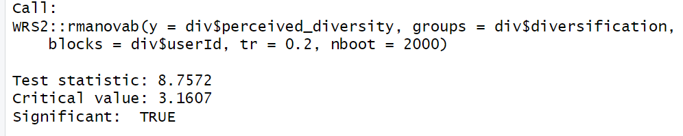
Saved figure or output 7 · original Homework 4 submission. Select the image to inspect it at full size.The test statistic is larger than the critical value, which suggests that it is significant.
WRS2::pairdepb(div$perceived_diversity, div$diversification, div$userId, tr=.2, nboot=2000)
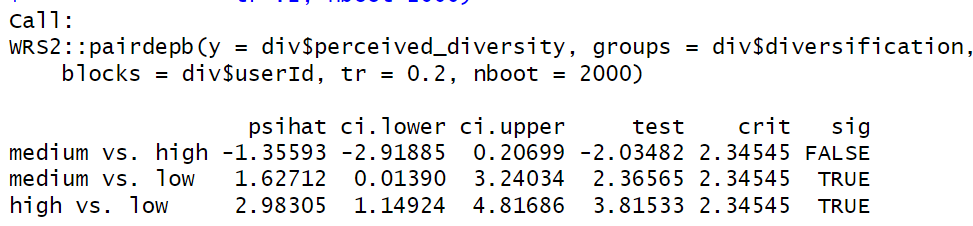
Saved figure or output 8 · original Homework 4 submission. Select the image to inspect it at full size.Just as before, the effect of diversification is significant. The posthoc tests reveal that both low vs. high diversification and low vs. medium diversification are significant, just as we saw in our previous model results. The high vs medium diversification is also not significant as expected. Therefore, our conclusions are unchanged.
Input:
baseModel <- gls(perceived_diversity~1, data = div, method = "ML").
Input:
randomModel <- lme(perceived_diversity~1, random =~1|userId, data = div, method = "ML")
divModel <- lme(perceived_diversity ~ diversification, random = ~ 1 | userId, data = div, method = "ML")
Input:
anova(baseModel, randomModel, divModel)
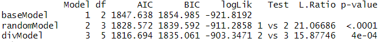
Saved figure or output 9 · original Homework 4 submission. Select the image to inspect it at full size.randomModel on baseModel:
Adding random intercept to randomModel significantly improves the model compared to the baseModel ( p < .001, LikelihoodRatio = 21.067).
divModel on randomModel:
Adding diversification to divModel further improves the model compared to randomModel and this effect is also significant ( p < .001, LikelihoodRatio = 15.878).
Input:
summary(divModel)
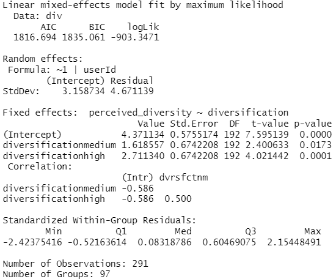
Saved figure or output 10 · original Homework 4 submission. Select the image to inspect it at full size.On average, medium diversification has higher perceived_diversity than low diversification, b = 1.619, t(192) = 2.401, p = 0.0173 (<0.05).
On average, high diversification has higher perceived_diversity than low diversification, b = 2.719, t(192) = 4.021, p = 0.0001 (<0.05)
Question 2. Mixed ANOVA with ezANOVA and lme
Input:
div$length_factor <- factor(div$length, levels = c(5,10,15,20,25))
Input:
ezAOV2 <- ezANOVA(data = div, dv =.(perceived_diversity), wid =.(userId), within =.(diversification), between =.(length_factor), detailed=T, type = 3)
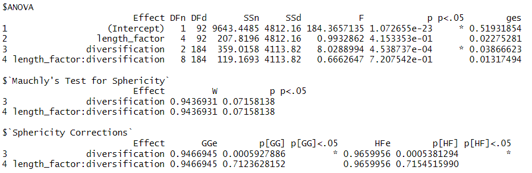
Saved figure or output 11 · original Homework 4 submission. Select the image to inspect it at full size.Mauchly's test for sphericity reveals that the p-values are not significant for diversification (p = .0716) and the interaction effect between length factor and diversification (p = .0716). This suggests that violations of sphericity assumptions are not significant. Thus, we do not have sphericity.
The effect of diversification is significant (F = 8.03, p < 0.001), which suggests that there is a significant difference in perceived diversity across different levels of diversification.
The effect of list length is not significant (F = 0.99, p = 0.415) which suggests that list length does not have a significant effect on perceived diversity.
The interaction effect between list length and diversification is not significant (F = 0.67, p = 0.721), which suggests that there is no significant interaction effect between list length and diversification on perceived diversity.
Input:
lengthModel <- lme(perceived_diversity ~ diversification + length,
random = ~ 1 | userId, data = div, method = "ML")
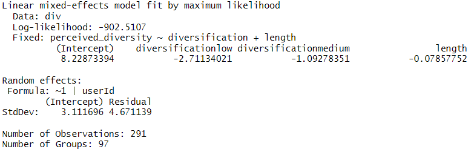
Saved figure or output 12 · original Homework 4 submission. Select the image to inspect it at full size.Input:
intModel <- lme(perceived_diversity ~ diversification + length:diversification,
random = ~ 1 | userId, data = div, method = "ML")
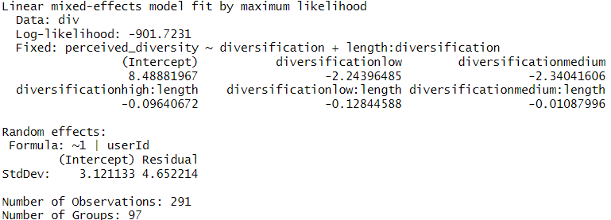
Saved figure or output 13 · original Homework 4 submission. Select the image to inspect it at full size.Input:
anova(divModel, lengthModel, intModel)
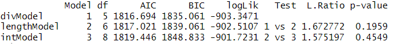
Saved figure or output 14 · original Homework 4 submission. Select the image to inspect it at full size.The results suggest that adding the continuous variable length as a predictor does not significantly improve the model. The effect of the length factor doesn’t have any significant effect on divModel (p = .1959, Likelihood ratio = 1.67). Also, there is no significant interaction effect between length and diversification on lengthModel (p = .455, Likelihood Ratio = 1.575). Thus, the divModel is not significantly improved by these factors.
Input:
summary(intModel)
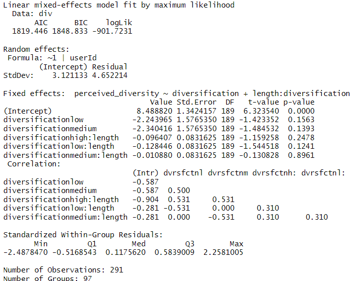
Saved figure or output 15 · original Homework 4 submission. Select the image to inspect it at full size.The perceived diversity when other predictors are kept constant is 8.49.
Upon inspection, the difference in perceived diversity between the low and high diversification is not significant (p = .156, b = -2.24, t(189) = -1.42).
The difference in perceived diversity between medium and high diversification is also not significant (p = .1393, b = -2.34, t(189) = -1.485).
The interaction effect between diversification and length is also not significant for high (p = .2478, t(189) = -1.159), low (p = .1241, t(189) = -1.545) and medium (p = .8961, t(189) = -.13) diversification levels.
8.488820 + (-2.243965 * 1) + (-0.128446 * 25) = 3.034
The predicted perceived diversity for a low diversity list with 25 items is 3.034
8.488820 + (-0.096407 * 10) = 7.524
The predicted perceived diversity for a high diversity list with 10 items is 7.524
Question 3. Mediation analysis
Input:
baseDiff <- gls(choice_difficulty~1, data=div, method = "ML")
Input:
randomDiff <- lme(choice_difficulty~1, random =~1|userId, data=div, method = "ML")
divDiff <- lme(choice_difficulty~diversification, random =~1|userId, data=div, method = "ML")
anova(baseDiff, randomDiff, divDiff)
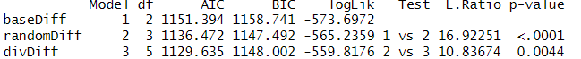
Saved figure or output 16 · original Homework 4 submission. Select the image to inspect it at full size.randomDiff vs baseDiff
The effect of adding a random intercept to the randomDiff model is significant, and it has a significant effect on choice_difficulty (p < .01, Likelihood ratio = 16.92), which suggests that adding the random intercept significantly improves model fit.
divDiff vs randomDiff
Adding diversification has a significant effect on choice_difficulty (p = .004, Likelihood ratio = 10.84), which suggests that adding diversification significantly improves model fit more than just including the random intercept alone.
summary(divDiff)
On average, medium diversification has a lower choice difficulty than low diversification, and this effect is significant (p = 0.04, b = -0.44, t(192) = -2.1)
On average, high diversification has a lower choice difficulty than low diversification, and this effect is significant (p = 0.0012, b = -69, t(192) = -3.28)
Step 1 of the mediation analysis states that diversification should have a significant effect on choice difficulty; therefore, it is supported because the diversifications have a significant effect on choice difficulty.
fullDiff <- lme(choice_difficulty ~ diversification + perceived_diversity, random = ~ 1 | userId, data = div, method = "ML")
anova(divDiff, fullDiff)
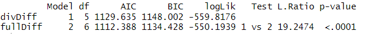
Saved figure or output 17 · original Homework 4 submission. Select the image to inspect it at full size.Adding perceived diversity has a significant effect on choice difficulty (p < .01, Likelihood ratio = 19.2474), which suggests that it significantly improves the model than the model with diversification only.
summary(fullDiff)
At low diversification, choice difficulty increases by .48 units. At medium diversification, the choice difficulty increases by .16 units. For each 1-unit increase in perceived diversity, the choice difficulty is lowered by .077 units.
Controlling for diversification, an increase in perceived diversity significantly lowers choice difficulty (p = 0, b = -.077, t(191) = -4.43).
Controlling for perceived diversity, medium diversification doesn’t have a significant effect on choice difficulty (p = .4281, b = .162, t(191) = .794).
Controlling for perceived diversity, high diversification significantly lowers choice difficulty, p-value = -0.0228, t(191) = -2.29, b = -0.4
Step 3 is supported because the perceived_diversity has a significant effect (p < .01). However, medium diversification doesn’t have any significant effect (p = 0.1243), and high diversification has a significant effect on choice difficulty (p = 0.0228).
perceivedDiff <- lme(choice_difficulty ~ perceived_diversity, random = ~ 1 | userId, data = div, method = "ML")
anova(fullDiff, perceiveDiff)
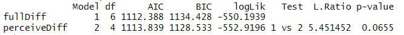
Saved figure or output 18 · original Homework 4 submission. Select the image to inspect it at full size.Adding perceived diversity doesn’t have a significant effect on choice difficulty (p = .0655, Likelihood ratio = 5.45), which suggests that adding diversification to the model does not significantly improve the model over using only perceived diversity as the predictor.
compared to the model with both diversification and perceived diversity.
Step 4 states that for “full mediation,” the former effect should not be significant. So, it is supported by our tests because the fullDiff model doesn’t have a significant improvement over perceiveDiff, which suggests full mediation.
Collaboration Statement
I worked on this assignment alone.